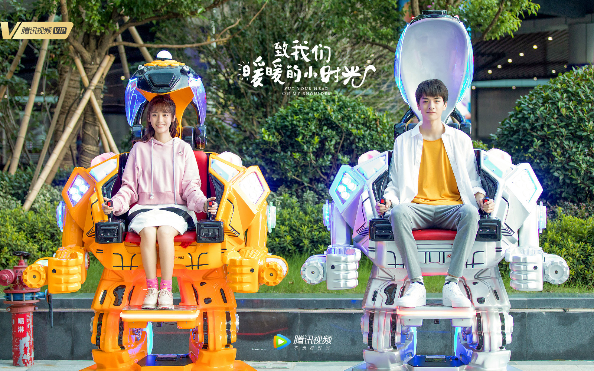

小时光
林一

邢菲
Go beyond syntax highlighting and autocomplete with IntelliSense, which provides smart completions based on variable types, function definitions, and imported modules.i know someone in the world is waiting for me, although i’ve no idea of who he is but i feel happy every day for this.我知道这世上有人在等我，但我不知道我在等谁，为了这个，我每天都非常快乐。
Debug code right from the editor. Launch or attach to your running apps and debug with break points, call stacks, and an interactive console.those days when we were together appear in my mind time after time, because they were so joyful, happy, blest, disappointing, sad and painful. i miss you ,and miss you so mach…… 常常想起曾和你在一起的那些日子。开心、快乐、幸福、失落、伤心、痛苦的所有日子关于爱情的英文词语 60句关于爱情的英文词语 60句。很想你，很想你……

Working with Git and other SCM providers has never been easier. Review diffs, stage files, and make commits right from the editor. Push and pull from any hosted SCM service.if you can hold something up and put it down, it is calledweight-lifting; if you can hold something up but can never put it down,it’s called burden-bearing. pitifully, most of people are bearing heavyburdens when they are in love.